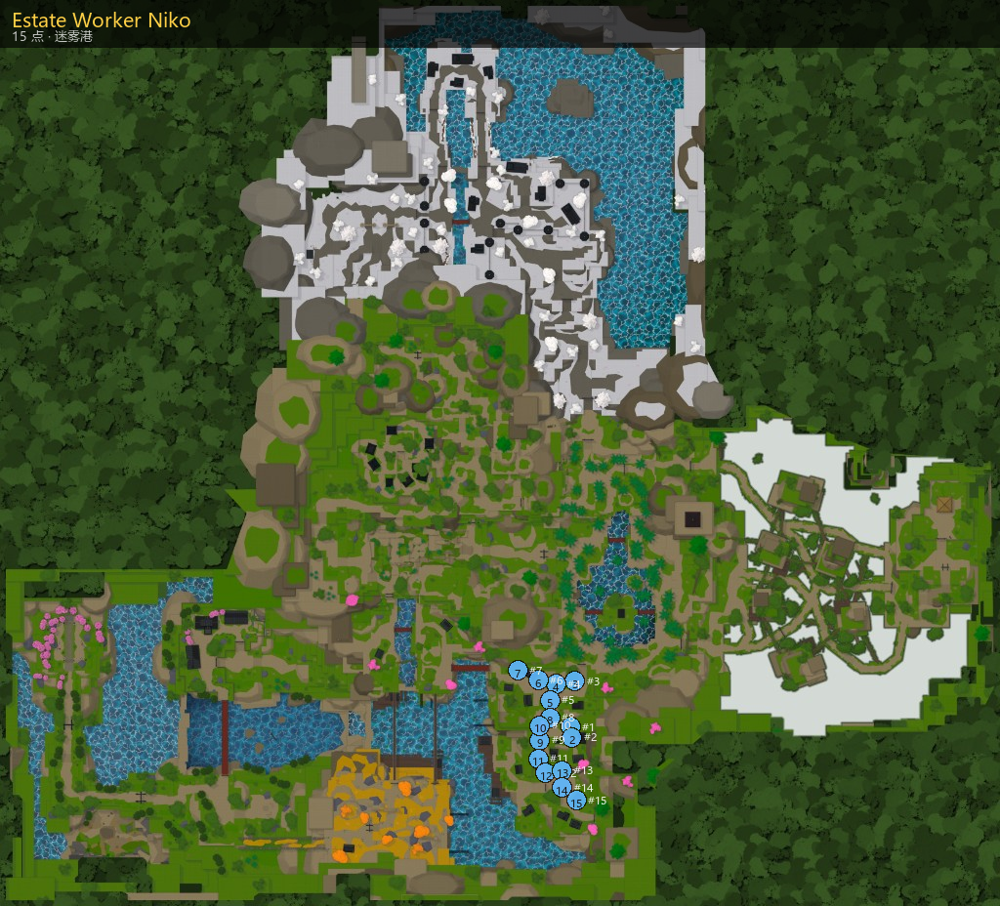

Estate Worker Niko
Estate Worker Niko
任务
- 区域：迷雾港 (Mistfall Harbor)
- 作用：任务
Estate Worker Niko

| # | 坐标 |
|---|---|
| 1 | 373.9, 942.5, 523.4 |
| 2 | 380.9, 943.0, 587.0 |
| 3 | 398.7, 964.1, 239.4 |
| 4 | 283.4, 964.2, 257.5 |
| 5 | 247.0, 942.5, 357.0 |
| 6 | 177.0, 963.1, 232.7 |
| 7 | 51.6, 963.1, 172.2 |
| 8 | 247.0, 942.5, 467.0 |
| 9 | 186.4, 910.0, 606.9 |
| 10 | 186.0, 937.1, 517.0 |
| 11 | 177.4, 875.0, 720.7 |
| 12 | 221.6, 875.0, 809.1 |
| 13 | 322.4, 875.0, 794.3 |
| 14 | 322.4, 875.0, 899.4 |
| 15 | 407.3, 875.0, 978.9 |